第四章 基本平面图形


教学目标 | 1. 掌握线段、射线、直线、角、多边形和圆的定义、构成要素及规范表示方法，理解相关性质公理。 2. 熟练运用尺规作图、量角器测量等技能，掌握线段长短比较、角的度量与度分秒换算。 3. 能从生活实例抽象几何图形，建立“元素—关系—图形”知识网络，解决简单实际问题。 |
教学重难点 | 1.重点 （1）核心概念理解与表达：明确线段、角等图形的本质属性，规范使用文字和符号语言描述。 （2）基本性质与技能运用：掌握“两点确定一条直线”等公理，熟练进行线段、角的相关操作与计算。 2.难点 （1）抽象概念具象化：难以直观感知射线、直线的无限延伸性，易混淆角的静态与动态定义。 （2）几何语言与建模：符号表示易出错（如射线端点顺序），难将实际问题转化为几何模型解决。 |

知识点一 线段、射线、直线
1.概念：线段是直线上两点之间的部分，有两个端点；射线是将线段向一个方向无限延长形成的，只有一个端点；直线是将线段向两个方向无限延长形成的，没有端点。
2.表示方法：都可以用两个大写字母表示，线段、直线也可以用一个小写字母表示。表示射线时，必须将表示端点的字母写在前面。
3.直线的性质：两点确定一条直线。
4. 线段的性质：两点之间线段最短，两点之间线段的长度叫两点间的距离。
5.线段的中点：把一条线段平均分成两条相等线段的点，叫做这个线段的中点。线段中点到线段两个端点的距离相等，对于任意一条线段，它都有且只有一个中点。
知识点二 角
1.定义：有公共端点的两条射线组成的图形叫做角；也可以看作一条射线绕着它的端点旋转而形成的图形。
2.表示法：可以用三个大写字母表示，顶点字母写在中间；也可用一个大写字母表示（当以该字母为顶点的角只有一个时）；还可以用小写希腊字母或数字表示。
3.度量单位：度、分、秒，1周角=360°，1平角=180°，1°=60′，1′=60″。
4.角平分线：从一个角的顶点出发，把这个角分成相等的两个角的射线叫做角平分线。
知识点三 多边形及正多边形
1.定义：多边形是由一些不在同一条直线上的线段依次首尾相连组成的封闭平面图形。各边相等、各角也相等的多边形叫做正多边形。
2.相关概念：多边形有顶点、边、内角、外角和对角线等概念。n边形一个顶点的对角线数为n-3，n边形的对角线总数为n(n−3)2，n边形的外角和为360°。
知识点四 圆及扇形
1.圆的定义：在一个平面内，一条线段绕着它固定的一个端点旋转一周，另一个端点所形成的图形叫做圆，固定的端点叫做圆心，线段叫做半径。
2.扇形：圆上任意两点间的部分叫做圆弧，由一条弧和经过这条弧的端点的两条半径所组成的图形叫做扇形，顶点在圆心的角叫做圆心角。

题型01 直线、射线、线段的表示及性质应用
【典例1】（25-26七年级上·辽宁阜新·期中）如图，A，B在直线l上，下列说法错误的是（ ）

A．射线 和射线
和射线 是同一条射线 B．直线和直线是同一条直线
是同一条射线 B．直线和直线是同一条直线
C．线段和线段是同一条线段 D．图中以点A为端点的射线有两条
【变式1】（24-25七年级上·山东·期中）如图，下列说法正确的是（ ）

A．图中共有5条线段
B．直线与直线 是指同一条直线
是指同一条直线
C．射线与射线是指同一条射线
D．点 在直线上
在直线上
【变式2】（25-26八年级上·全国·周测）下列说法中，错误的有（ ）
①两点之间线段最短； ②直线AB长10cm；
③过A，B两点可以作无数条直线； ④线段AB和线段BA是同一条线段．
A．1个 B．2个 C．3个 D．4个
【变式3】（25-26七年级上·全国·课后作业）如图，下列说法正确的是（ ）
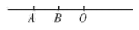
A．射线与射线 是两条不同的射线 B．直线
是两条不同的射线 B．直线 与直线
与直线 是两条不同的直线
是两条不同的直线
C．线段与线段 是同一条线段 D．射线与射线是同一条射线
是同一条线段 D．射线与射线是同一条射线
题型02 画直线、射线、线段
【典例2】（2025七年级上·全国·专题练习）已知，如图在平面内有A、B、C、D四点，根据下列语句画出图形．

(1)画直线、线段 、射线
、射线 ；
；
(2)在线段上任取一点E（不同于点B，C）连接 ，
， ；
；
(3)数一数此时图中共有几条线段，几条射线？
【变式1】（25-26七年级上·全国·课后作业）在图中有A，B，C，D四个点，请按下列语句画图并填空：

(1)画射线．
(2)画线段和，它们相交于O．
(3)画直线 ，连接和
，连接和 ．
．
(4)此时，图中共有线段________条，射线________条，直线________条．
【变式2】（24-25七年级上·四川泸州·期末）如图，平面上有四个点A，B，C，D，根据下列语句画图：
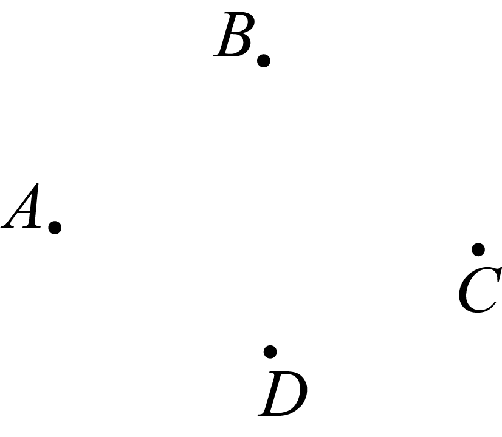
(1)画直线 ，画射线
，画射线 ，连接
，连接 ；
；
(2)连接 ，并反向延长至点E，使
，并反向延长至点E，使 ；
；
(3)请在A，B，C，D四个点围成的四边形内找一点O，使 最小，理由是______．
最小，理由是______．
【变式3】（24-25六年级下·黑龙江哈尔滨·期末）如图，平面上有四个点A、B、C、D，根据下列语句画图．
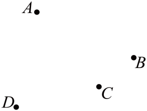
(1)画直线；
(2)作射线 ，与直线交于点；
，与直线交于点；
(3)连接；
(4)找到一点 ，使到
，使到 、
、 、
、 、
、 四点的距离和最短．
四点的距离和最短．
题型03 线段长度的计算
【典例3】（2025七年级上·全国·专题练习）如图，已知点为线段上一点， ，
， ，、
，、 分别是
分别是 、的中点．求：
、的中点．求：
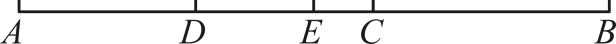
(1)的长度为______；
(2) 的长度为______；
的长度为______；
(3)若 在直线上，且，求
在直线上，且，求 的长度．
的长度．
【变式1】（2025七年级上·全国·专题练习）如图，已知B、C在线段上．

(1)图中共有______条线段；
(2)若
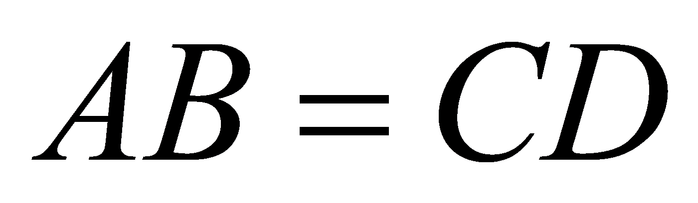
．①比较线段的长短：______ （填“ ”、“
”、“ ”或“
”或“ ”）；
”）；
②若 ，
， ，求的长度；
，求的长度；
(3)在（2）的条件下，点M是线段的中点，点N是线段的三等分点，求线段 的长度．
的长度．
【变式2】（24-25七年级上·全国·期末）在如图所示的数轴上，某点从原点开始运动，先向左平移2个单位长度到达点A，再向左平移4个单位长度到达点B，最后向右平移10个单位长度到达点C．

(1)分别写出点A，B，C表示的数．
(2)若点P在线段上运动，当 时，求出点P表示的数．
时，求出点P表示的数．
(3)若点Q从点C出发，在线段的延长线上运动，M是 的中点，N是
的中点，N是 的中点，试说明
的中点，试说明 是一个定值．
是一个定值．
【变式3】（24-25七年级上·陕西咸阳·阶段练习）【问题背景】
如图，已知线段 ，点是线段的中点，点是线段的中点．
，点是线段的中点，点是线段的中点．
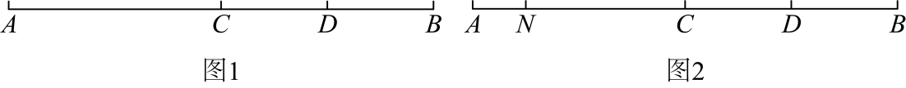
【问题探究】
（1）如图1，求线段的长；
（2）如图2，点 是线段上的一点，且满足，
是线段上的一点，且满足，
①求线段 的长；
的长；
②若点是线段上的一点，
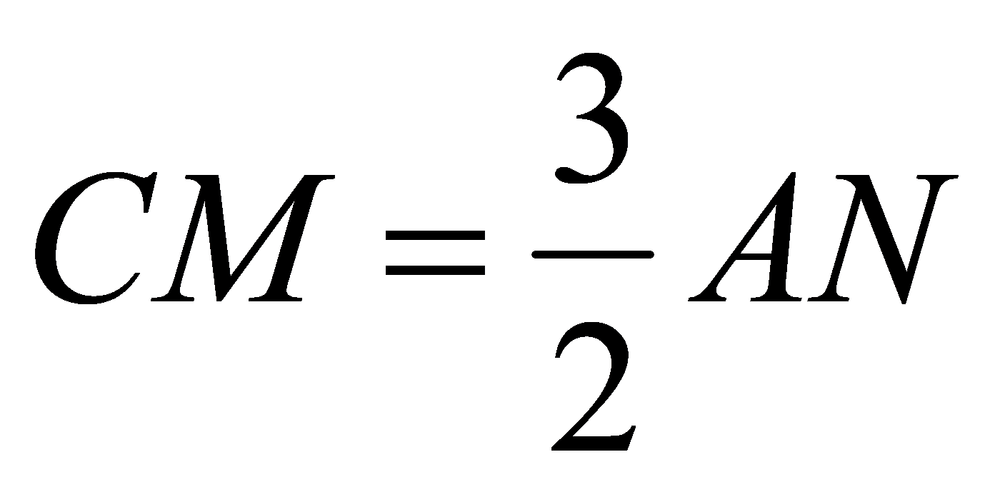
，求 的长．
的长．题型04 角的度量及计算
【典例4】（23-24七年级上·陕西安康·期末）如图，射线 在
在 的内部，
的内部， ，
， 分别是，
分别是，
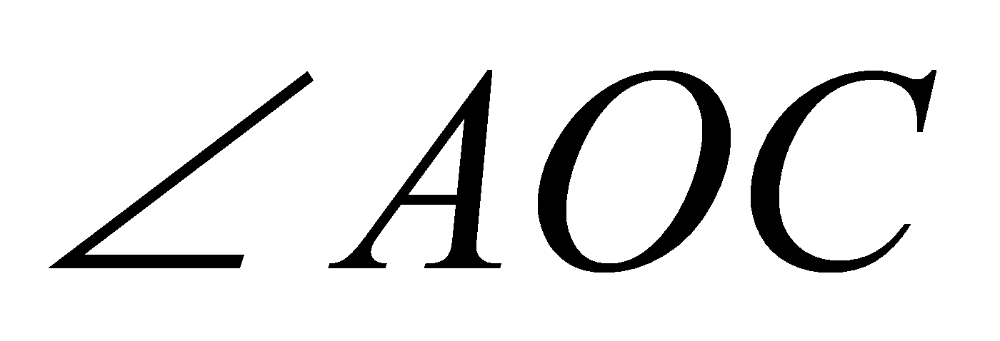
的平分线．
(1)若 ，
， ，则
，则 度；
度；
(2)若的度数为 ，的度数为β，则
，的度数为β，则 是多少度？（用α，β表示）
是多少度？（用α，β表示）
(3)请写出与
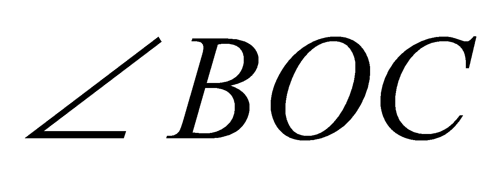
的数量关系，并说明理由．【变式1】（23-24七年级上·江西·期末）已知，是过点的一条射线， 分别平分
分别平分 ．
．
(1)如图①，如果射线在的内部， ，则
，则
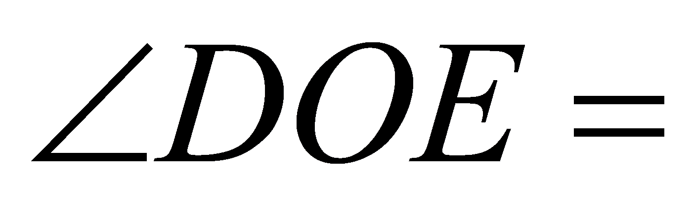
 ；
；(2)如图②，如果射线在的内部绕点旋转， ，则 ；
，则 ；
(3)如果射线在的外部绕点旋转，，请借助图③探究
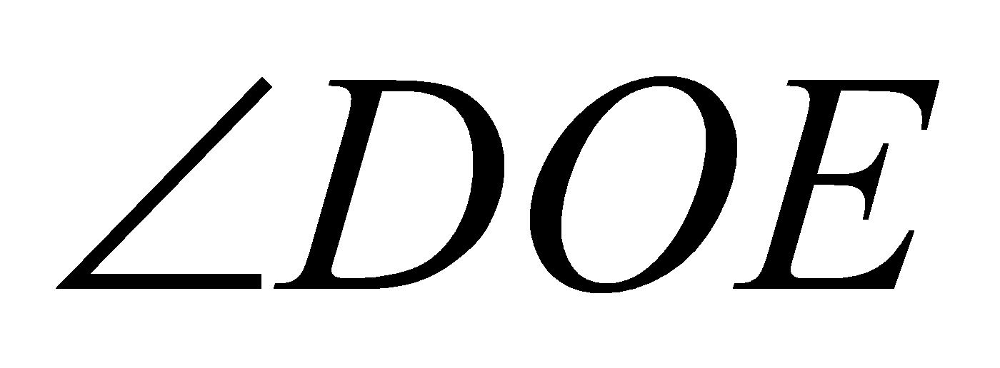
的度数．【变式2】（24-25七年级上·广东东莞·期末）已知锐角，点为平面内一点，，分别平分和．
(1)如图 ，点为内一点，求证：
，点为内一点，求证： ；
；
(2)如图 ，点为外一点，其他条件不变，（1）中的结论还成立吗？若不成立，请说明理由；若成立，请证明；
，点为外一点，其他条件不变，（1）中的结论还成立吗？若不成立，请说明理由；若成立，请证明；
(3)当点在平面内其他位置时，与之间还存在其他的数量关系吗？请画图并直接写出结论．
【变式3】（24-25七年级上·吉林长春·阶段练习）如图1，已知内部有三条射线． 平分，平分．
平分，平分．
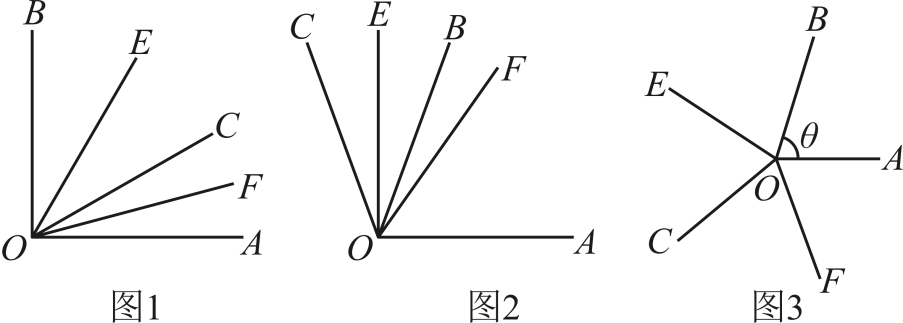
（1）若
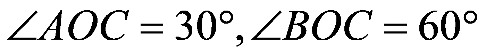
，求 ；
；（2）若 ，
， ，则
，则
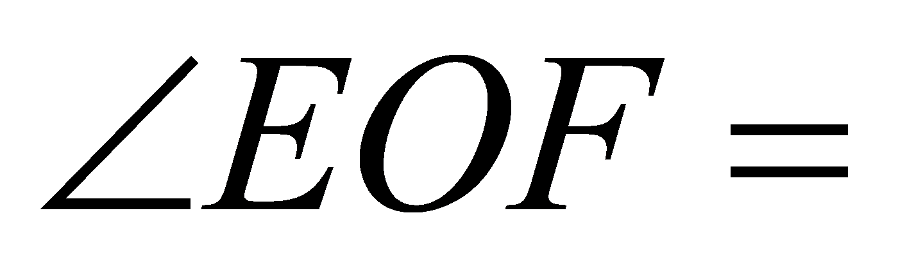
________；（3）若
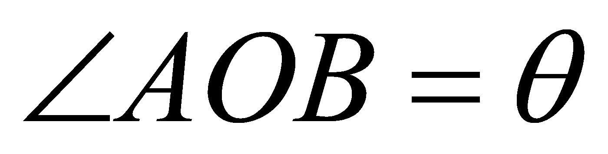
，猜想出与 的关系________．
的关系________．【拓展提问】若射线在的外部如下图2，图3，，平分，平分，分别写出与的关系的结论．（直接写出结论）
题型05 线段有关的多解题问题
【典例5】（23-24七年级下·山东临沂·开学考试）已知点A、B、C位于直线 上，其中线段
上，其中线段 ，且
，且 ，若点M是线段的中点，则线段
，若点M是线段的中点，则线段 的长为 ．
的长为 ．
【变式1】（24-25七年级上·浙江杭州·期中）在一条可以折叠的数轴上依次有点A，C，B，其中点A，点B表示的数分别为
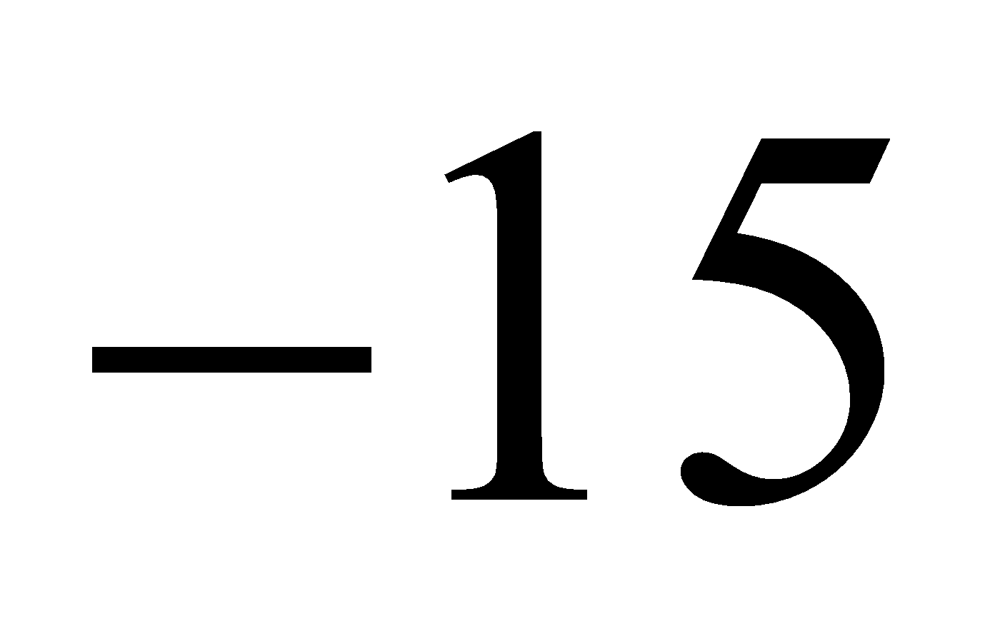
和7，现以点C为折点，将数轴向右对折，点A对应的点为点 ，若，B两点之间的距离为1，则点C表示的数为 ．
，若，B两点之间的距离为1，则点C表示的数为 ．【变式2】（24-25七年级上·河北石家庄·期末）如图，有公共端点的两条线段， 组成一条折线
组成一条折线 ，若该折线上一点
，若该折线上一点 把这条折线分成相等的两部分，我们把这个点叫做这条折线的“折中点”，已知是折线
把这条折线分成相等的两部分，我们把这个点叫做这条折线的“折中点”，已知是折线
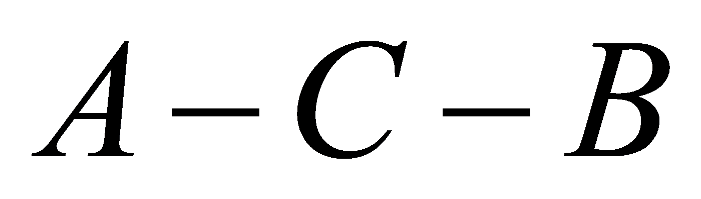
的“折中点”，为线段的中点， ，
， ，则线段的长为 ．
，则线段的长为 ．
【变式3】（23-24七年级上·浙江湖州·期末）如图，两根木条的长度分别为 和
和 ，在它们的中点处各打一个小孔M，N（木条的厚度，宽度以及小孔大小均忽略不计）．将这两根木条的一端重合并放置在同一条直线上，则两小孔间的距离
，在它们的中点处各打一个小孔M，N（木条的厚度，宽度以及小孔大小均忽略不计）．将这两根木条的一端重合并放置在同一条直线上，则两小孔间的距离
 ．
．

题型06 角有关的多解题问题
【典例6】（24-25七年级上·黑龙江哈尔滨·开学考试）已知
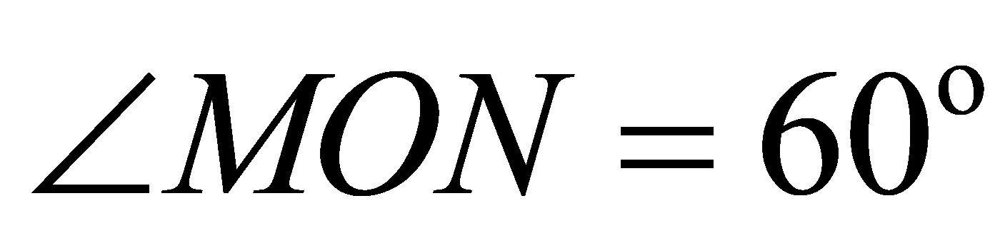
，过作射线，作射线平分 ，若
，若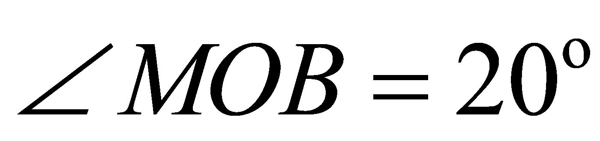
，则的度数为 ．【变式1】（23-24七年级上·四川成都·期末）如图，已知为从顶点出发的射线， ，且
，且
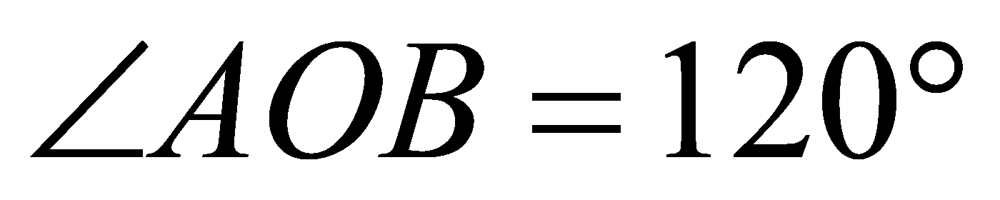
，射线平分．平面内有射线 和射线，射线平分
和射线，射线平分 ．若
．若 ，则
，则 ．
．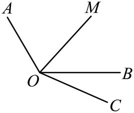
【变式2】（24-25七年级上·河南郑州·期末）一副三角板按如图方式摆放，点 在同一条直线上，
在同一条直线上， ．现将三角板
．现将三角板 绕点逆时针旋转一周，当所在直线恰好平分
绕点逆时针旋转一周，当所在直线恰好平分 时，三角板转过的角度为 ．
时，三角板转过的角度为 ．

【变式3】（24-25六年级下·山东泰安·期中）如图，已知是内部的一条射线，图中有三个角：，和，当其中一个角是另一个角的两倍时，称射线为的“巧分线”，如果
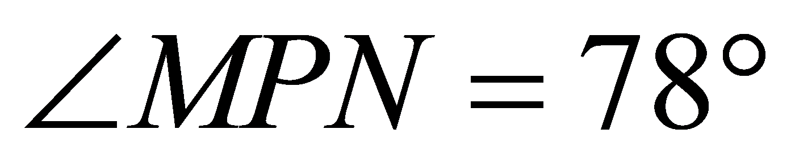
且 是
是 的“巧分线”，则
的“巧分线”，则 的度数为 ．
的度数为 ．
题型07 多边形及圆的相关计算
【典例7】（24-25七年级上·辽宁本溪·期末）过六边形的一个顶点能画出对角线的条数是 ．
【变式1】（2024七年级上·全国·专题练习）已知一个扇形的半径长为 ，圆心角为
，圆心角为 ，则这个扇形的面积为 ．
，则这个扇形的面积为 ．
【变式2】（24-25九年级上·河北唐山·期中） 外一点
外一点 到圆周上一点的最长距离为
到圆周上一点的最长距离为 ，最短距离为
，最短距离为 ，则的直径长为
，则的直径长为  ．
．
【变式3】（24-25七年级上·山东枣庄·期末）在研究多边形的几何性质时，我们通常把它分割成几个三角形进行研究．从一个多边形的一个顶点引出的所有对角线，把它分割成5个三角形，则这个多边形的边数是 ．
题型08 线段与角的规律探究问题
【典例8】（24-25七年级上·湖北孝感·期末）如图1，从点 分别引两条射线，则得到一个角
分别引两条射线，则得到一个角 ．（图中的角均指不大于平角的角）
．（图中的角均指不大于平角的角）
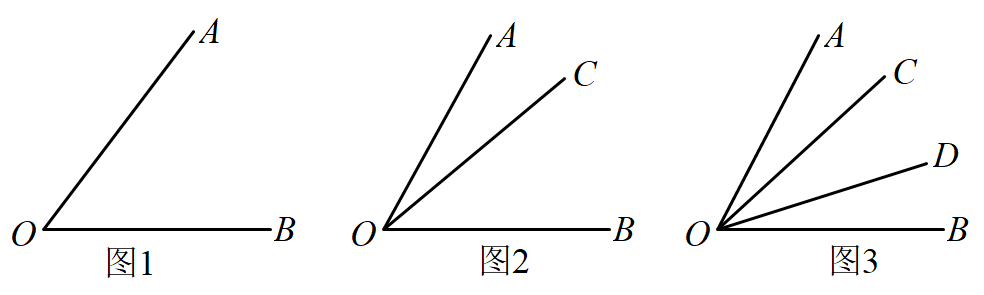
(1)探究：①如图2，从点分别引三条射线，则图中得到________个角；
②如图3，从点分别引四条射线，则图中得到________个角；
③依此类推，从点分别引 条射线，则得到________个角（用含的式子表示）；
条射线，则得到________个角（用含的式子表示）；
(2)应用：利用③中发现的规律解决问题：某校七年级共有16个班进行足球比赛，准备进行单循环赛（即每两队之间赛一场），则全部赛完共需多少场比赛？
【变式1】（24-25六年级上·上海普陀·期末）如图1，已知 、
、 是内的两条射线．
是内的两条射线．
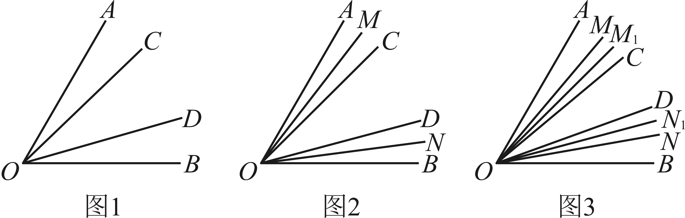
(1)已知
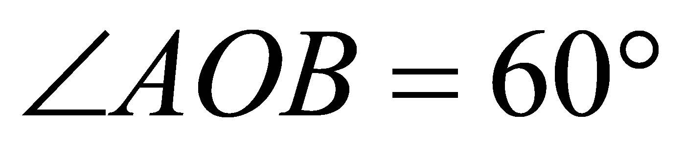
， ，
， ，那么
，那么 ________．
________．(2)如图2，设的度数是 ，
， 的度数是
的度数是 ，作射线
，作射线 平分
平分 ，射线
，射线 平分
平分 ．
．
①如果 ，
， ，求
，求 的度数．
的度数．
②如图3，作 平分
平分 ，
， 平分
平分
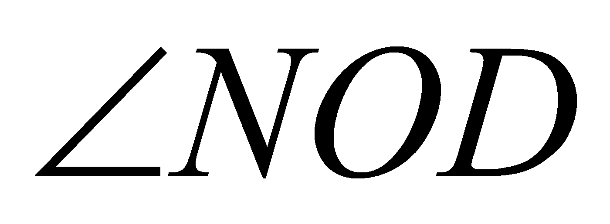
；作 平分
平分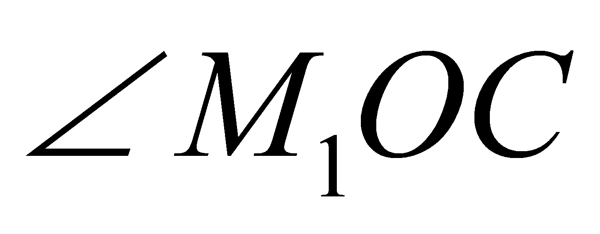
，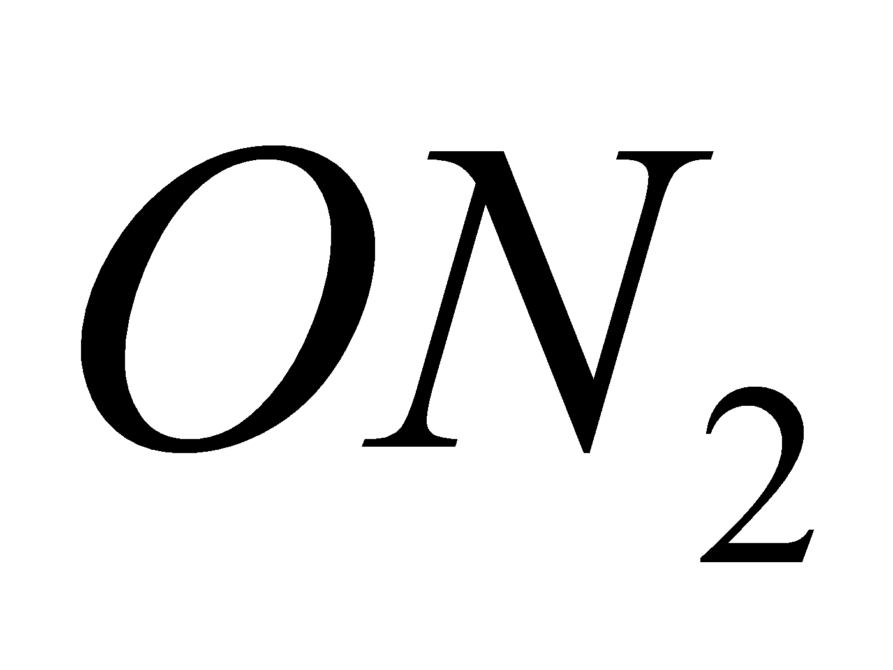
平分 ，按此规律以此类推……作
，按此规律以此类推……作 平分
平分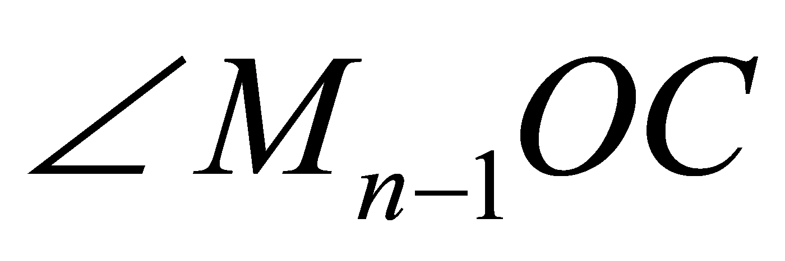
，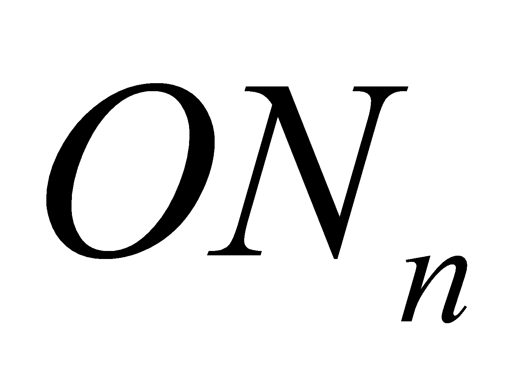
平分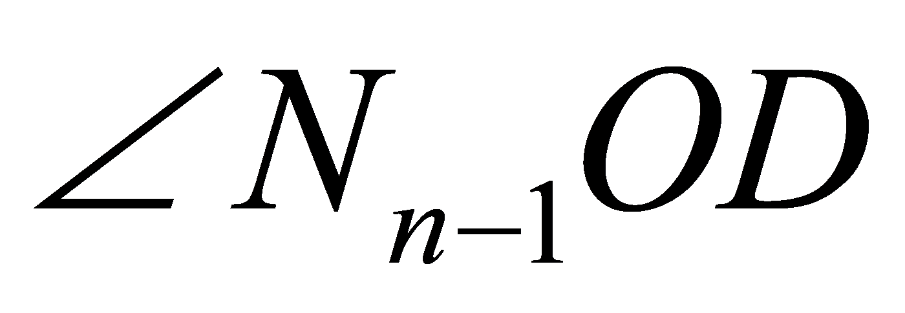
，用含、、的代数式表示 和
和 的度数．（直接写出答案）
的度数．（直接写出答案）【变式2】（24-25七年级上·山东济南·期末）有如下问题：“平面上，分别有2个点、3个点、4个点、5个点，……，n个点，其中任意3个点都不在一条直线上，经过每两点画一条直线，它们分别可以画多少条直线？”为了解决这一问题，小明设计了如图表进行探究：
点数 | 2 | 3 | 4 | 5 | … | n |
示意图 | 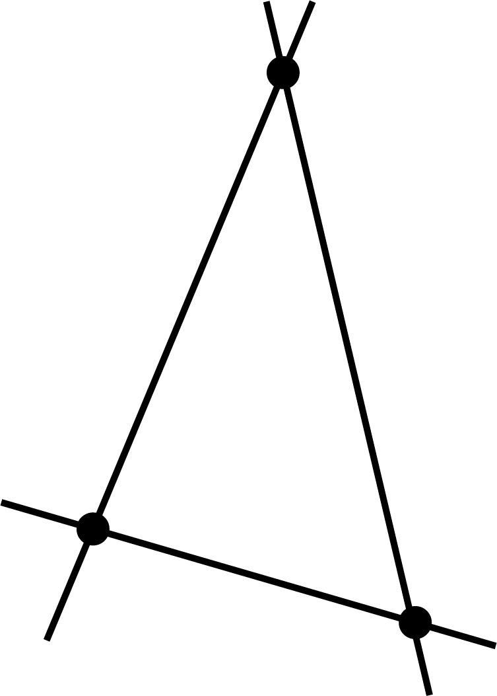 |
| 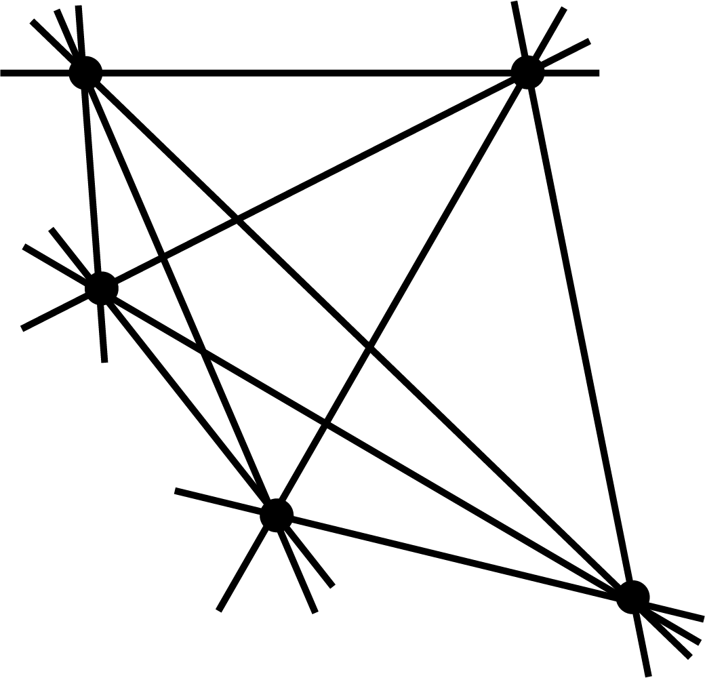 | … |
| |
直线 | 1 | 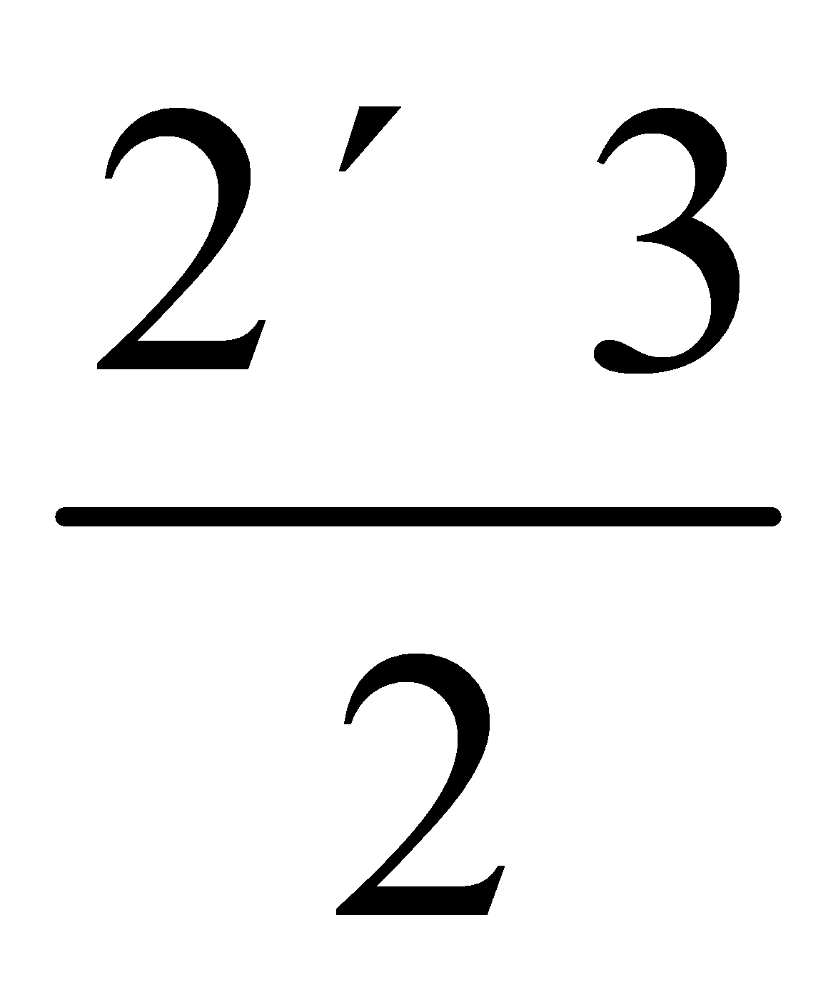 | 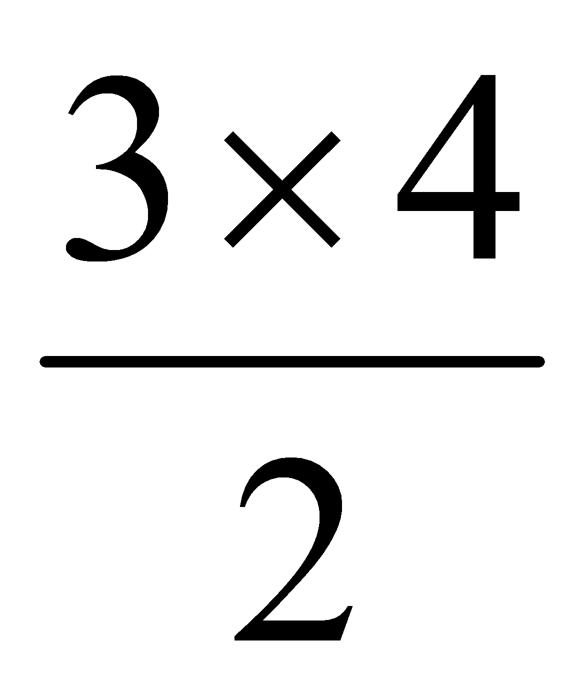 | … |


【发现规律】
（1）当点数为5时，过任意一点的直线有_____条，共有直线_____条；
【探索归纳】
（2）当点数为时，过任意一点的直线有_____条，共有直线_____条；（用含的代数式表示）
【迁移运用】
（3）请按照小明的探究思路，分析并解决下列问题：
某学校七年级共有6个班进行足球比赛．
①若进行单循环比赛，每两个班都要赛一场，全部比完共进行了多少场比赛?
②比赛结束后，每两个班级之间互送一份纪念品，共送出多少件纪念品？
【变式3】（23-24七年级上·江苏宿迁·期末）（1）知识探究：

如图1，已知一条直线 ，
，
当上有2个点时，图中只有 ，条线段，
，条线段，
当上有3个点时，图中有 条线段，
条线段，
当上有4个点时，图中有 条线段，
条线段，
当上有5个点时，图中有 条线段，
条线段，
．．．．．．
按此规律：
当上有个点时，图中有 ___________条线段：
___________条线段：
（2）知识应用；
如图2，内有条射线，则图中共有___________个角；

（3）知识迁移：
如图3，线段BC上有2016个点，则图中共有___________个三角形；
（4）知识拓展：
①如图4，图中共有___________个长方形（含正方形）；
②如图5，图中共有___________个长方形（含正方形）；
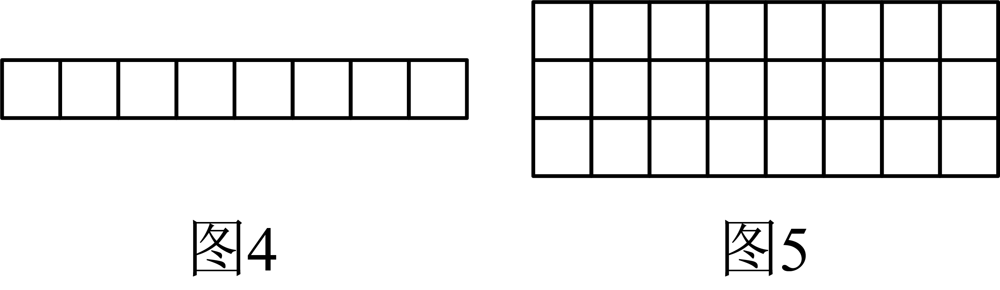
题型09 线段动点与动角的探究问题
【典例9】（24-25七年级上·江西上饶·期末）（1）探索规律
点C在线段 上，则有
上，则有 三条线段．若其中有一条线段的长度是另外一条线段长度的2倍，则称C是线段的“巧点”．
三条线段．若其中有一条线段的长度是另外一条线段长度的2倍，则称C是线段的“巧点”．
①线段的中点 这条线段的“巧点”．(填“是”或“不是”)
②若
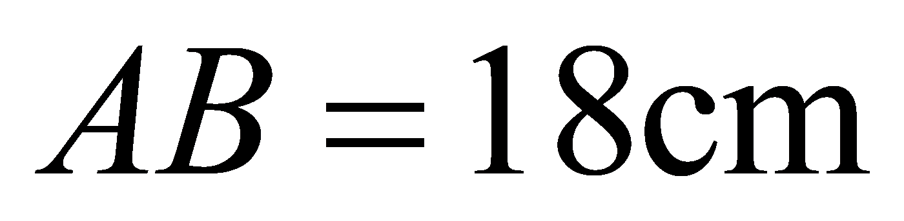
，C是线段的“巧点”，求 的长．
的长．（2）探究类比
如图， 平分
平分 ，
， 是
是 内部从点O出发的一条射线，
内部从点O出发的一条射线， 平分
平分 ．
．
①若
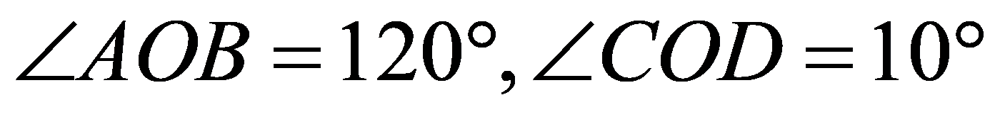
，求 的度数．
的度数．②设 ，x与y具有怎样的数量关系？
，x与y具有怎样的数量关系？

【变式1】（24-25七年级上·内蒙古鄂尔多斯·期末）类比思想和分类讨论思想是初中数学学习中常用的数学思想，小明在学习了第六章《几何图形初步》的相关知识后，认为解决线段和角的问题是对这两种思想的一种体现．如图①，已知线段
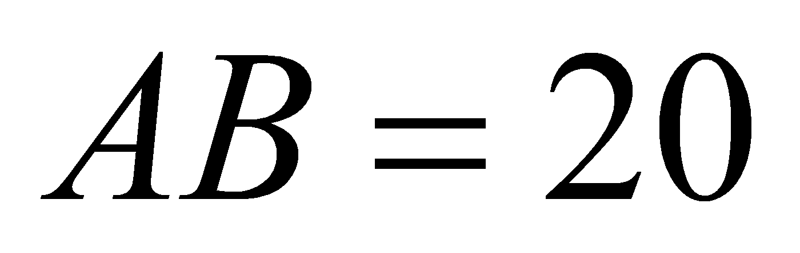
，点C为直线 上的一个动点，点D、E分别是
上的一个动点，点D、E分别是 和
和 的中点．
的中点．
【分类讨论】（1）若
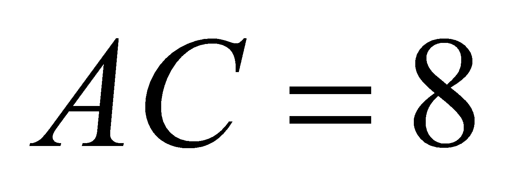
，请画图分析并写出：①当点C在线段上时， 的长为______；
的长为______；
②当点C在 的延长线上时，的长为______．
的延长线上时，的长为______．
【类比分析】（2）若 ，请说明不论m取何值（m小于20）的长不变；
，请说明不论m取何值（m小于20）的长不变；
【知识迁移】（3）如图②，已知 ，过平面内任一点C画射线，满足
，过平面内任一点C画射线，满足 （n小于70），若、
（n小于70），若、 分别平分和
分别平分和 ，请求出
，请求出 的度数，并写出你发现的结论．
的度数，并写出你发现的结论．
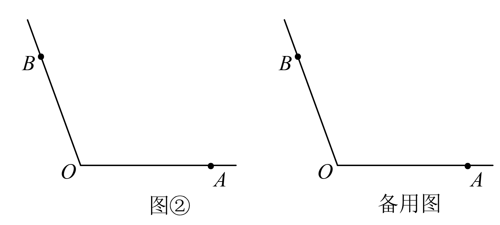
【变式2】（24-25七年级上·湖北孝感·期末）如图线段 ，动点从
，动点从 出发，以2个单位长度／秒的速度沿射线运动，
出发，以2个单位长度／秒的速度沿射线运动， 为
为 中点．
中点．

(1)当点在线段上运动时，
①出发多少秒后，？
②试说明 为定值；
为定值；
(2)当点在线段延长线上运动时，设 为
为
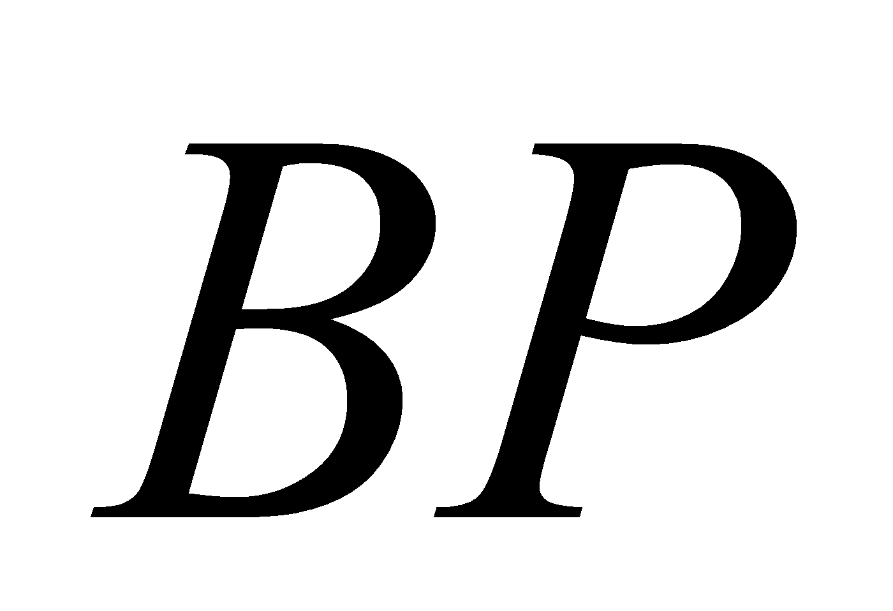
的中点，有下列两个结论：① 长度不变；
长度不变；
② 的值不变．
的值不变．
选出一个正确的结论，并求其值；
【变式3】（24-25七年级上·河南商丘·期末）（1）探究：哪些特殊的角可以用一副三角板画出？
在① ，②
，②
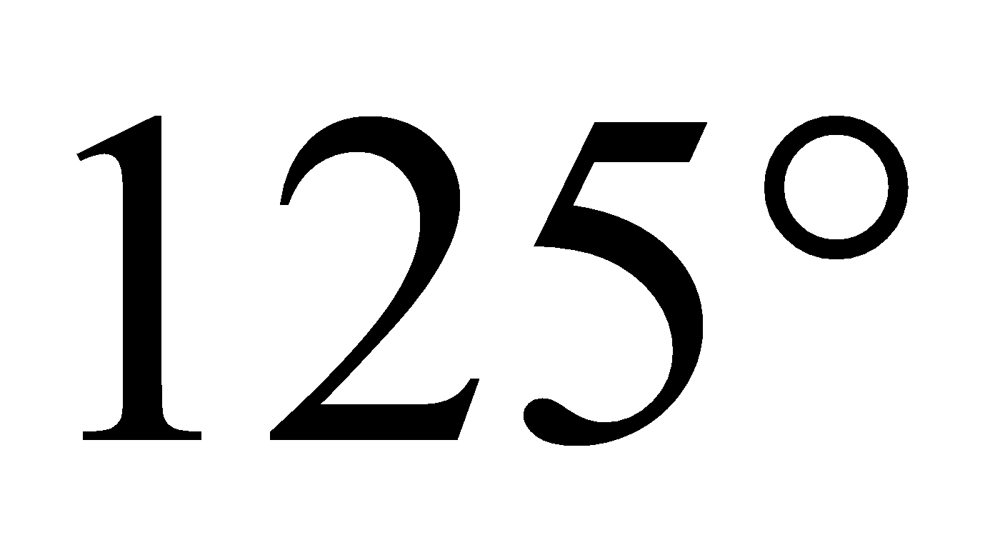
，③ ，④
，④ 中，小明同学利用一副三角板画不出来的特殊角是______．（填序号）
中，小明同学利用一副三角板画不出来的特殊角是______．（填序号）（2）在探究过程中，爱动脑筋的小明想起了图形的运动方式有多种．如图，他先用三角板画出了直线 ，然后将一副三角板拼接在一起，其中
，然后将一副三角板拼接在一起，其中 角（）的顶点与
角（）的顶点与 角（）的顶点互相重合，且边
角（）的顶点互相重合，且边 都在直线上，固定三角板
都在直线上，固定三角板 不动，将三角板
不动，将三角板 绕点O按顺时针方向旋转一个角度
绕点O按顺时针方向旋转一个角度 ，当边
，当边 与射线
与射线 第一次重合时停止．
第一次重合时停止．
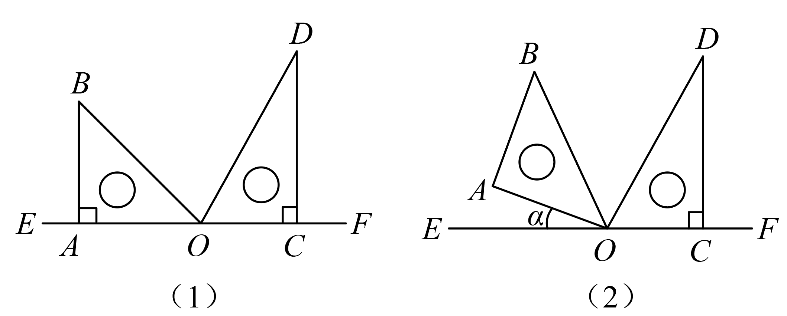
①当平分
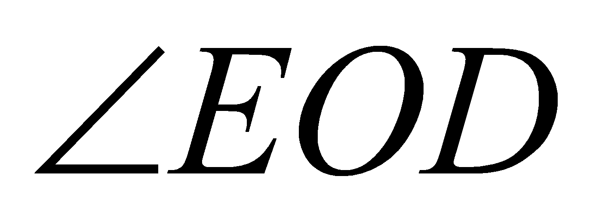
时，求旋转角度；②是否存在
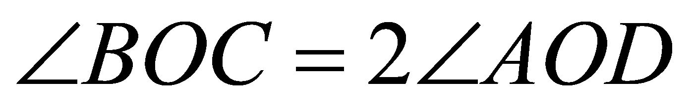
？若存在，直接写出旋转角度；若不存在，请说明理由． 
一、单选题
1．（25-26七年级上·全国·课后作业）如图，在 内部作了一条射线，下列说法错误的是（ ）
内部作了一条射线，下列说法错误的是（ ）

A．图中共有3个角 B．可以用 表示
表示
C． 与
与 是同一个角 D．
是同一个角 D．
2．（25-26七年级上·全国·课后作业）下列各式中，正确的是（ ）
A． B．
B．
C． D．
D．
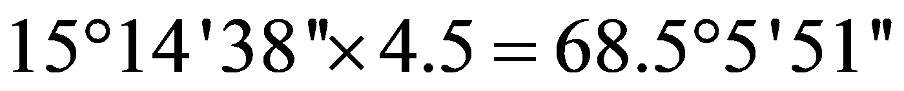
3．（24-25七年级上·山东·期中）以下给出的四个语句中，正确的是（ ）
A．若线段 ，则点
，则点 ，
， ，
， 在同一直线上
在同一直线上
B．如果线段 ，则是线段
，则是线段 的中点
的中点
C．线段 厘米，为直线上的一点，且
厘米，为直线上的一点，且
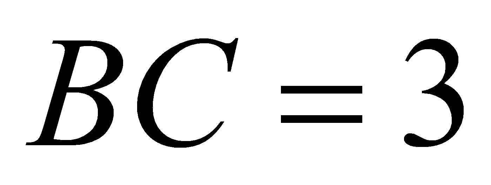
厘米，那么 的长度是1厘米
的长度是1厘米D．两点之间的线段叫做这两点间的距离
4．（25-26七年级上·黑龙江佳木斯·期中）如图，点C在线段上，，点M、N分别是
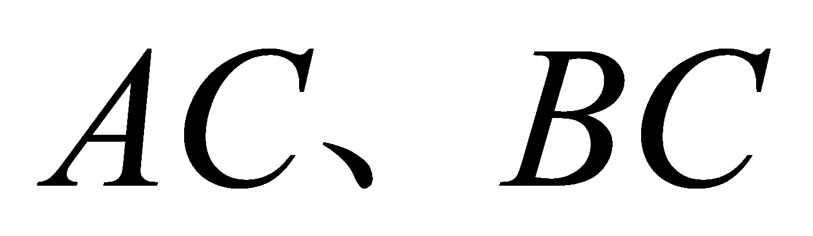
的中点，则 的长度为（ ）
的长度为（ ）
A． B．
B． C．
C． D．
D．
5．（2025九年级·全国·专题练习）如图，在 中，AB是弦，C是
中，AB是弦，C是 上一点．若
上一点．若 ，
，
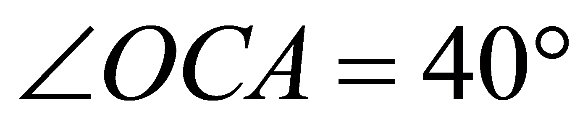
，则 所对的圆心角度数为（ ）
所对的圆心角度数为（ ）A． B．
B． C．
C． D．
D．
6．（25-26七年级上·全国·课后作业）如图，， 平分
平分 ，
， 平分，下列结论：①；②
平分，下列结论：①；② ；③与
；③与 可以拼成一个直角；④与可以拼成一个平角，正确的个数有（ ）
可以拼成一个直角；④与可以拼成一个平角，正确的个数有（ ）

A．1个 B．2个 C．3个 D．4个
二、填空题
7．（24-25七年级下·河南周口·阶段练习）比较大小：
 ．（填“
．（填“ ”“
”“ ”或“
”或“ ”）
”）
8．（2025九年级·全国·专题练习）如图，在中，弦有 ，直径有 ，劣弧有 ，优弧有 ．
9．（25-26七年级上·全国·课后作业）（1）时钟 ，时针与分针所夹的角是
，时针与分针所夹的角是  ．
．
（2）如图，此时钟面上的时间是10时40分，到11时，时针走过的度数是 ．
10．（25-26七年级上·黑龙江绥化·阶段练习）如图，直线 相交于点O，
相交于点O， 平分
平分 ，
， 平分，
平分， ，则
，则 ．
．
11．（2025七年级上·全国·专题练习）定义：在直线l上的三点A，B，C，若满足 ，则称点C是点A关于点B的“半距点”．如图，若M，N，P三点在同一直线m上，且点P是点M关于点N的“半距点”，
，则称点C是点A关于点B的“半距点”．如图，若M，N，P三点在同一直线m上，且点P是点M关于点N的“半距点”， ，则
，则 ____
____  ．
．
12．（24-25七年级上·四川·阶段练习）已知 ，
， ，
， 平分，
平分， 平分．（本题中的角均为大于0°且小于等于180°的角）．当从如图所示位置绕点
平分．（本题中的角均为大于0°且小于等于180°的角）．当从如图所示位置绕点 顺时针旋转时，满足
顺时针旋转时，满足 ，则
，则 ．
．

三、解答题
13．（25-26七年级上·全国·单元测试）如图，已知，M为的中点，点P在 上，N为
上，N为 的中点．
的中点．

(1)图中共有 条线段；
(2)若 ，求
，求 的长．
的长．
14．（24-25六年级下·山东淄博·阶段练习）如图所示，点C是线段 上的一点，点M是线段
上的一点，点M是线段 的中点，点N是线段
的中点，点N是线段 的中点．
的中点．

(1)如果，，求的长；
(2)如果，求长．
15．（24-25七年级上·浙江台州·期末）如图，已知四个点A，B，C，D，按下列要求画图．
(1)画直线；
(2)画射线 ，交直线于点
，交直线于点 ；
；
(3)在线段上找一点P，使得最小，其依据是__________________．
16．（2025七年级上·安徽芜湖·竞赛）已知为直线上的一点， 是直角，平分
是直角，平分 ．
．

(1)如图1，若 ，则
，则 __________；若
__________；若 ，则__________；
，则__________； 与的数量关系是__________．
与的数量关系是__________．
(2)当绕点顺时针旋转到如图2的位置时（在上方），（1）中与的数量关系是否还存在？请说明理由；
(3)在图2中，反向延长得射线 ，试探索射线能否平分
，试探索射线能否平分 ，若能，求的度数；若不能，请说明理由．
，若能，求的度数；若不能，请说明理由．
17．（24-25七年级上·贵州·期末） A，B 两点在数轴上的位置如图所示，其中点 A 对应的有理数为 ，且
，且 ．动点 P 从点 A 出发，以每秒2个单位长度的速度沿数轴正方向运动，设运动时间为t秒（t
．动点 P 从点 A 出发，以每秒2个单位长度的速度沿数轴正方向运动，设运动时间为t秒（t ）．
）．

(1)当 时，
时， 的长为 ，点 P 表示的有理数为 ；
的长为 ，点 P 表示的有理数为 ；
(2)当时，求 的值；
的值；
(3) M为线段的中点，N 为线段 的中点．在点 P 运动的过程中，线段的长度是否发生变化？若变化，请说明理由；若不变，请你画出图象，并求出线段的长．
18．（25-26九年级上·广东东莞·期中）探究归纳题：

【试验分析】
（1）如图①，过点可以作1条对角线；同样，经过点可以作1条对角线；经过点可以作1条对角线；经过点 可以作1条对角线；且对角线与
可以作1条对角线；且对角线与 为同一条．通过以上分析和总结，图①共有________条对角线；
为同一条．通过以上分析和总结，图①共有________条对角线；
【拓展延伸】
（2）运用（1）的分析方法可得：图②每个顶点出发有________条对角线，共有________条对角线；图③共有________条对角线；
【探索归纳】
（3）对于 边形，共有________条对角线（用含的代数式表示）；
边形，共有________条对角线（用含的代数式表示）；
【特例验证】
（4）十边形共有________条对角线．
19．（24-25七年级上·广西梧州·期末）已知 ，
， 满足
满足 ，数轴上点对应的数为，点对应的数为，线段在数轴上移动，点在点右侧，
，数轴上点对应的数为，点对应的数为，线段在数轴上移动，点在点右侧， ．
．
(1)填空： _____，
_____， _____；
_____；
(2)如图1，当点移动到的中点时，点对应的数是_____；
(3)如图2，若线段在点左侧， 为
为 中点，
中点， 为
为 中点，猜想与的数量关系并说明理由．
中点，猜想与的数量关系并说明理由．
20．（24-25六年级下·黑龙江哈尔滨·期末）已知为直线上一点，射线 、
、 、位于直线上方，在的左侧，，
、位于直线上方，在的左侧，， ．
．

(1)如图1，当平分 时，求
时，求 的度数；
的度数；
(2)如图2，过点作射线，且 ，请判断和
，请判断和 的数量关系，说明理由；
的数量关系，说明理由；
(3)如图3，在（2）的条件下，作射线 、
、 ，满足
，满足 ，且平分
，且平分 ．当时，求的度数．
．当时，求的度数．